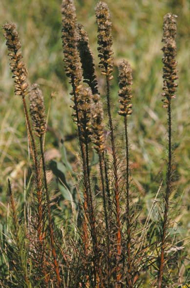
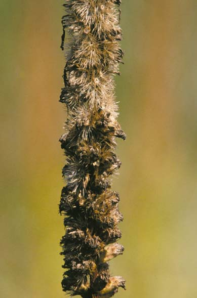
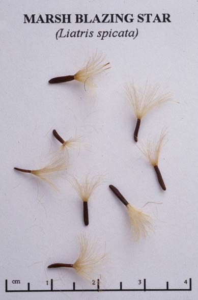
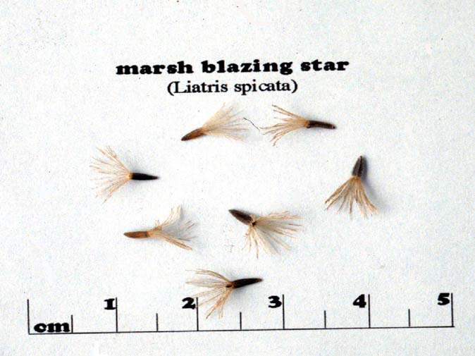

Liatris Spicata
Family: Asteraceae
Marsh Blazing Star
Swink/Wilhelm #6



Click to view larger photo
FLOWERING: Late July through September
SEED TIMING: Late September to mid-October
HABITAT: Wet to mesic prairie
DIAGNOSTIC FEATURES: Blooms earlier and has a more densely flowered spike than L. aspera. Numerous grass-like, usually hairless leaves line the stem.
TO PICK: Pick seed same as for L. aspera. Seed ripens and forms pappus from top down. Allow top portion to disperse on site. Bottom seed heads may then be stripped even if not completely ripe as they will ripen later in a brown bag.